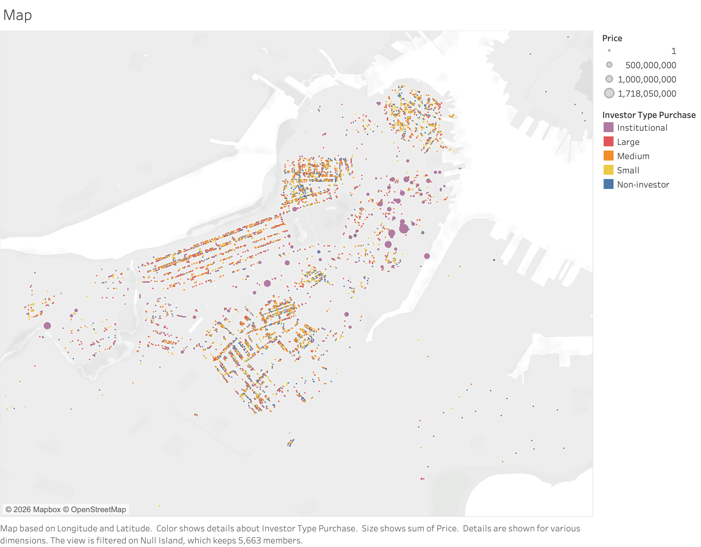

Subtheme: Speculation
Overall Analysis Questions
-
How has the share of demand which is renters/home-buyers (as opposed to speculators/investors) changed over time?
- This is a basic introductory question; my hypothesis (based on the articles) is that it has decreased. I don't know yet how to quantify it, and I think attempting to quantify demand will be a valuable exploratory exercise.
- Motivation: based on the readings (see 'Reckoning with Boston's Towers of Wealth'), I know this is a problem, but I want to know how big the problem is.
-
What's the scale/distribution of buyers and renters? More specifically, are investors mostly large firms or single-time investments? What price-range are most buyers looking for?
- Motivation: I think this is an important question because it starts to build a better picture of who the stakeholders are, which is a good 'step 1' to solving a people problem like this.
-
How far our of their price range have buyers been pushed, and which income levels are most out of their price range?
- This question will be hard to nail down; for example, I'm imagining giving everyone a home/apartment in order (cheapest homes to poorest people) and then seeing which income level has the most rent burden.
- Motivation: I've heard (in person, from the Mass. Water Commission, actually) that there's a 'missing middle' in Mass. housing, but I'd like to confirm that for myself. I feel like the poor are probably still the most rent-burdened (that's intuitive, right?), and those two hypotheses seem to contradict.
Overview
First, I like to go through the columns and see what jumps out. This is so that I (and you) can get a sense of what data we're working with. This is not exhaustive.
- Answering "who is buying/selling"
buyer_bnk_ind,buyer_bus_ind,buyer_gov_ind,buyer_gse_ind,buyer_llc_ind,buyer_trst_ind— these indicate who is buyingseller_*, same as abovebuyer_purchases— entities with a lot of properties are probably not living there; I could use this to measure monopolizationtot_owned— similar
inv_to_inv— see transactions where people are totally cut outinvestor_*
- Answering "what is getting bought"
proptypestyleusecode— there are a lot of codes for industrial purposes. I really don't feel like sorting through these...
- Measuring "flips"
flip_horizon,flip_ind,flip_termprice_diff— how much they made on the flip
- Answering "what actually is this data"
current_owner: what does it mean for the buyer to be the current owner? I assumed these were transactions.
- Estimating cost burden
mortgage,price


usage codes (residential, mixed, temporary residential, and other) and the six buyer indicators (commerical, banks, government, other) into sections. This diagram shows all combinations of those categories and the total volume of sales within those categories as bubbles. Each bubble represents a kind of land use. The large purple circle is general-purpose offices, while the large green is condominiums. There are many (a hundred or so) groups, so they're not all listed.


Investor Type Purchase on the vertical axis, where the colors and sizes have the same meaning as the above chart. This shows that Investor Type Purchase might be an even better way to categorize who is or isn't an investor. From here on out, I'll use Investor Type Purchase to distinguish investors.
Discoveries & Insights
Question 1: How has the share of demand which is renters/home-buyers (as opposed to speculators/investors) changed over time?
This next chart is pretty simple, but the background for why I think it's appropriate isn't. In particular, there are the questions.
- How do you decide what qualifies as an investor? My options were to use
investor_type_purchaseor thebuyer_*_inds. The buyer indicators overlap and there appears to be some missing data, whileinvestor_type_purchasehas less information but it seems to be more quality. - How do you decide which properties to include? We want to include residential properties, and again I have two options:
proptypeorusecode. I get more control overusecode`, but that creates room for errors in my analysis. Meanwhileproptypehas some strangeness about it — storage condos count as residential, as do dorms, fraternities, and residential condo parking lots; I'm not sure that all of these are appropriate.proptypealso encodes 'residential development land' as commercial, which might be okay — I'm not sure what to do with this.
 Share of Demand.png)
proptype code, whereas the buyer is distinguished based on the buyer indicator variables. Any missing data is lumped into 'Humans', so it's likely that htis plot over-estimates the share of demand from individuals.
.png)
Investor Type Purchase code. This shows a much more dramatic effect, where around 50% of the demand is from investment. The overall shape of the graph looks similar to the above chart, so we can consider this a sensitive analysis. I think this is suggestive that on the order of 30% to 60% of the demand in housing is from investment, and that the share of investment demand is increasing over time.
Question 2: What's the scale/distribution of buyers and renters? More specifically, are investors mostly large firms or single-time investments? What price-range are most buyers looking for?

There's a lot that I'd like to add to this chart, but I'm reaching the limits of what I know how to do with Tableau. I want to create this chart in a one-year sliding window — the tip of the blue (non-investor) line should then match up exactly with the blue line in my 'Share of Demand (2)' chart. Additionally, I would like to add callouts for the 20th, 50th, and 80th percentiles, so we could compare more numerically the median or exceptional costs for each type of buyer. These would be the percentiles based on the cumulative count of addresses, not the cumulation value.

I can use this chart to see that the median non-investment property is about $600k, the median small investment property is $800k, medium and large investment firms is about $1M, and (bizarrely) the median property for an institutional firm is only $600k. These are estimates based on mousing over the line — not actual calculations. However, this still roughly indicates that the median property value doesn't change a lot across types of buyers, but the average value does.
To actually answer the question, investors tend to buy larger properties according to the scale of the investor. The vast majority of properties are purchased by non-investors, but the properties are worth less on average than those purchased by investment firms. This effect is created by investment firms having a much greater variance in the value of their properties — the median values across all categories are quite similar, but the larger an investors is, the larger their outlier properties are (they can be many orders of magnitude larger). Most investors are small, and indeed most total investment happens by the smaller firms. Non-investors overwhelmingly are searching in the range of $200k to $3M, as you'd expect. Because this data is up to 20 years old and it isn't adjusted for inflation, the actual costs in the present are probably a bit larger.
Question 3: How far our of their price range have buyers been pushed, and which income levels are most out of their price range?
- This question will be difficult to answer without income and population data, and I don't see any in our A2 datasets. However, it's not impossible to get some ideas.
- We have data on the proportion of the price made with a mortgage.
- We can see if the locations of homes being sold changes over time.
- Even if we don't know how many people can afford (for example) $1M home, we can plot a view of the world from the perspective of someone who can afford such a home. We can then compare those outlooks from different home cost bins and see how it has changed over time.
I'm going to try the third option.

There's a lot that's wrong with this plot — I left it in as exposition for the next plots, which I like a lot more. You can't get any understanding of the homes worth more than a few million; there's no color scale because there are actually hundreds of distinct bins.

Here I manually binned the prices into reasonable ranges. These choices are a little arbitrary, but a logarithmic scale or linearly spaced bins wouldn't be appropriate. I think these numbers are relatively round, so that will help with comprehension. I think this chart is an improvement on the previous one: you can clearly see the decline in the amount of cheap houses purchased by non-investors. You can additionally see how investors tend to purchase mostly homes in the $2M+ range.
I think this graph is misleading however. The $10M+ residential purchases are a tiny sliver at the bottom of the 'investor' table, but those properties probably represent a huge share of the actual livable units — it might include apartment complexes, for example. I want to see if I can adjust this chart to display the number of units (homes, rooms) faithfully. I have data on the number of bedrooms in a house, but there's $7.4 billion in 0-bedroom residential purchases, $6.5 billion of which are investment properties — these are probably the apartments we're looking for.

I think this chart could still use some work. The Y axis is interesting but unintuitive, as it's not unreasonable to think (for example) that a $2M building with 10 bedrooms might be affordable, rather than luxury, housing. Hence, we're mixing together luxury and non-luxury housing into the same bin. The share of expensive investment properties increases a little, but ultimately this chart is not all that different in the inferences you'd draw from the previous one. I would like to have a way to deal with the 0-bedroom buildings — I suspect those house a huge portion of the city, but I can't think of anything.
Summary
To summarize, the share of residential demand attributable to investors is substantial (in the range of 30 to 50%) seems to increase over time. Investor purchases skew toward higher-priced properties — this can include luxury housing and large apartment buildings. Lower-cost residential properties have declined, which suggests that affordability is an issue, especially for people in low income brackets. Ambiguity in the metadata wround investor type and land use are a limitation of this analysis.
A good future question would be to try to distinguish what share of rooms are owned by investment — we can't distinguish this with the current data because many investment residentail properties have 0 rooms.